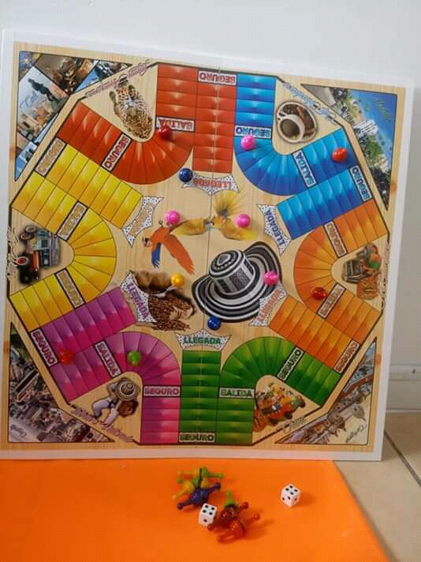
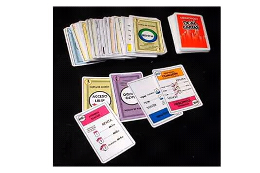

Puedes ingresar a paginas como
o paginas parecidas, pues podrás buscar tutoriales y muchas cosas más, para que aprovecehes el tiempo.
Puedes hacer este tipo de manillas
También puedes distraerte con algunos juegos que puedes juagar en familia, por ejemplo Parqués, Cartas, Dominós y otros.
 